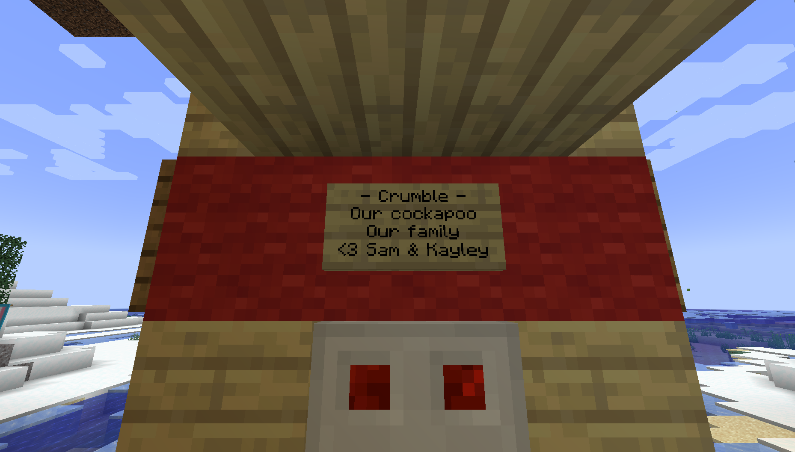
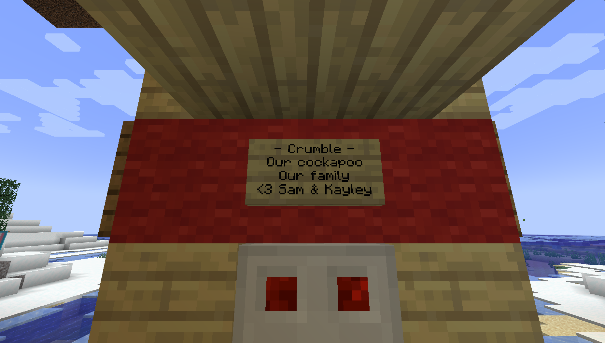

Crumble in Minecraft
Here is our dog Crumble

I had the idea of making a homage to him in RTGames Minecraft world server.
I am not the best Minecraft builder however so I spent a lot of time thinking of how I would represent him in the voxel game.
My initial thought was to create a 3D model of him. Pass it through a Voxelizer and then build in on the server.
That idea was going to fail though. Taking a 3D model of an active puppy was near impossible and even then the end result wasn't really what I wanted...

As you can see in the above image it is a very big build but the colours are off and it's doesn't capture him.
NOTE: To do this I used Smoothie-3D to turn a still image into a 3D model of him and Drububu Voxelizer to convert it into Minecraft (and then fixed the colours a bit myself manually with creative mode and World Edit.)
Why was I spending time with this convoluted method when I miss the point completely. I want to have Crumble on the Minecraft server.
So why don't I JUST DO THAT?
So I did, I'm not the best builder but I can try...
And in 2 hours work (including writing this). He is now at the North Pole on RT Game's Minecraft Server :)

 
